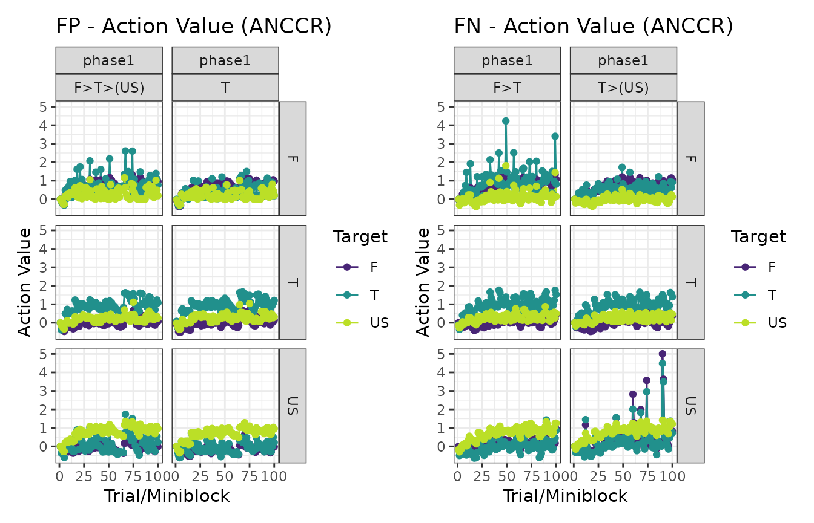

Time models in calmr
Version 0.5 of calmr introduced its first time-based
model, ANCCR (Jeong et al., 2022), and
with it, I wrote several additional tools for future time-based
models.
Changes to trial-based models
The biggest change in calmr version 0.5 is the use of
the “>” character and its effect on trial-based models. With the
advent of time-based models, some generalizations had to be made to
enable those models to update across adjacent trial periods. You can
learn more about this in the directional_models vignette.
Specifying a design for time-based models
The designs for time-based models are nearly identical to those for trial-based models. However, clever use of the “>” character will enrich them. Let’s specify a serial feature discrimination experiment:
library(calmr)
#>
#> Attaching package: 'calmr'
#> The following object is masked from 'package:stats':
#>
#> filter
#> The following object is masked from 'package:base':
#>
#> parse
fpfn <- data.frame(
group = c("FP", "FN"),
phase1 = c("!100F>T>(US)/100T", "!100F>T/100T>(US)")
)
parse_design(fpfn)
#> CalmrDesign built from data.frame:
#> group phase1
#> 1 FP !100F>T>(US)/100T
#> 2 FN !100F>T/100T>(US)
#> ----------------
#> Trials detected:
#> group phase trial_names trial_repeats is_test stimuli
#> 1 FP phase1 F>T>(US) 100 FALSE F;T;US
#> 2 FP phase1 T 100 FALSE T
#> 3 FN phase1 F>T 100 FALSE F;T
#> 4 FN phase1 T>(US) 100 FALSE T;USWe can manually specify the timing for the above experiment by
calling the get_timings() function. Manipulating the list
returned by that function will result in a manipulation of the timing
between the experimental events.
ts <- get_timings(fpfn, model = "ANCCR")
ts
#> $use_exponential
#> [1] TRUE
#>
#> $sample_timings
#> [1] TRUE
#>
#> $trial_ts
#> trial post_trial_delay mean_ITI max_ITI
#> 1 F>T>(US) 1 30 90
#> 2 T 1 30 90
#> 3 F>T 1 30 90
#> 4 T>(US) 1 30 90
#>
#> $transition_ts
#> trial transition transition_delay
#> 1 F>T>(US) F>T 1
#> 2 F>T>(US) T>(US) 1
#> 3 F>T F>T 1
#> 4 T>(US) T>(US) 1And now let’s get the parameters for the ANCCR model.
pars <- get_parameters(fpfn, model = "ANCCR")
# increase learning rates
pars$alpha_reward <- 0.8
pars$alpha <- 0.08
# increase sampling interval to speed up the model
pars$sampling_interval <- 5
pars
#> $reward_magnitude
#> F T US
#> 1 1 1
#>
#> $betas
#> F T US
#> 1 1 1
#>
#> $cost
#> [1] 0
#>
#> $temperature
#> [1] 1
#>
#> $threshold
#> [1] 0.6
#>
#> $k
#> [1] 1
#>
#> $w
#> [1] 0.5
#>
#> $minimum_rate
#> [1] 0.001
#>
#> $sampling_interval
#> [1] 5
#>
#> $use_exact_mean
#> [1] 0
#>
#> $t_ratio
#> [1] 1.2
#>
#> $t_constant
#> [1] NA
#>
#> $alpha
#> [1] 0.08
#>
#> $alpha_reward
#> [1] 0.8
#>
#> $use_timed_alpha
#> [1] 0
#>
#> $alpha_exponent
#> [1] 1
#>
#> $alpha_init
#> [1] 1
#>
#> $alpha_min
#> [1] 0
#>
#> $add_beta
#> [1] 0
#>
#> $jitter
#> [1] 1Let’s make the model’s experience and look at the first 20 entries.
experiment <- make_experiment(fpfn,
parameters = pars,
timings = ts,
model = "ANCCR"
)
head(experiences(experiment)[[1]], 20)
#> model group phase tp tn is_test block_size trial stimulus time reward_mag
#> 1 ANCCR FP phase1 1 F>T>(US) FALSE 2 1 F 23.38353 1
#> 2 ANCCR FP phase1 1 F>T>(US) FALSE 2 1 T 24.38353 1
#> 3 ANCCR FP phase1 1 F>T>(US) FALSE 2 1 US 25.38353 1
#> 4 ANCCR FP phase1 2 T FALSE 2 2 T 32.49078 1
#> 5 ANCCR FP phase1 2 T FALSE 2 3 T 69.82864 1
#> 6 ANCCR FP phase1 1 F>T>(US) FALSE 2 4 F 108.73032 1
#> 7 ANCCR FP phase1 1 F>T>(US) FALSE 2 4 T 109.73032 1
#> 8 ANCCR FP phase1 1 F>T>(US) FALSE 2 4 US 110.73032 1
#> 9 ANCCR FP phase1 1 F>T>(US) FALSE 2 5 F 114.16272 1
#> 10 ANCCR FP phase1 1 F>T>(US) FALSE 2 5 T 115.16272 1
#> 11 ANCCR FP phase1 1 F>T>(US) FALSE 2 5 US 116.16272 1
#> 12 ANCCR FP phase1 2 T FALSE 2 6 T 136.08422 1
#> 13 ANCCR FP phase1 1 F>T>(US) FALSE 2 7 F 138.40530 1
#> 14 ANCCR FP phase1 1 F>T>(US) FALSE 2 7 T 139.40530 1
#> 15 ANCCR FP phase1 1 F>T>(US) FALSE 2 7 US 140.40530 1
#> 16 ANCCR FP phase1 2 T FALSE 2 8 T 174.19286 1
#> 17 ANCCR FP phase1 1 F>T>(US) FALSE 2 9 F 184.77492 1
#> 18 ANCCR FP phase1 1 F>T>(US) FALSE 2 9 T 185.77492 1
#> 19 ANCCR FP phase1 1 F>T>(US) FALSE 2 9 US 186.77492 1
#> 20 ANCCR FP phase1 2 T FALSE 2 10 T 204.17045 1As you can see above, there are several rows per trial, each specifying a different stimulus. Time-based models like ANCCR run over a time log because they make ample use of the temporal difference between events.
Let’s run the model and see some plots.
experiment <- run_experiment(experiment)
# Action values
patch_plots(plot(experiment, type = "action_values"))
# ANCCR
patch_plots(plot(experiment, type = "anccrs"))
# Dopamine transients
patch_plots(plot(experiment, type = "dopamines"))
And that’s it! Easy, right?